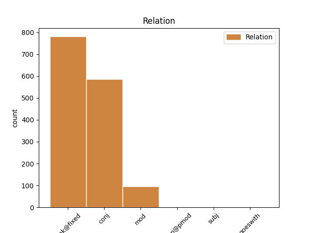
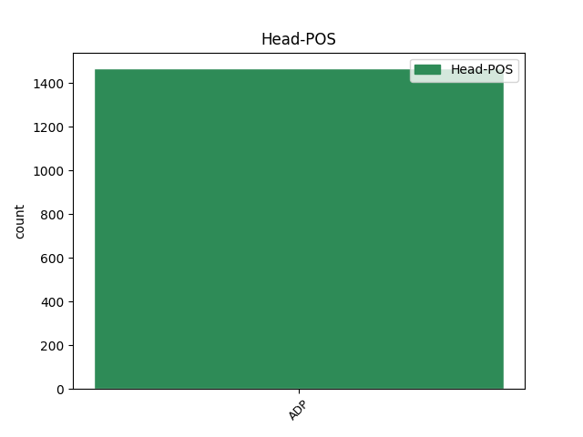
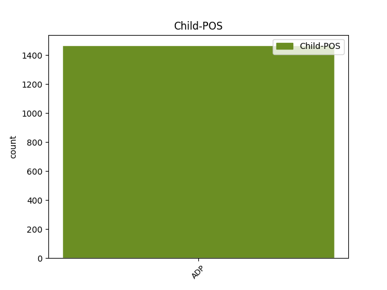

Distribution of features within this leaf



Agreement Rules sorted by frequency.
- When the dependent token is the unk@fixed(unk@fixed) of the head token, and the head token is ADP and the dependent token is ADP.
1 În _ _ _ _ 0 _ _ _
2 general _ _ _ _ 0 _ _ _
3 , _ _ _ _ 0 _ _ _
4 punctul _ _ _ _ 0 _ _ _
5 de de ADP Spsa AdpType=Prep|Case=Acc 0 _ _ _
6 la la ADP Spsa AdpType=Prep|Case=Acc 5 unk@fixed _ _
7 care _ _ _ _ 0 _ _ _
8 se _ _ _ _ 0 _ _ _
9 pleacă _ _ _ _ 0 _ _ _
10 în _ _ _ _ 0 _ _ _
11 construcția _ _ _ _ 0 _ _ _
12 unui _ _ _ _ 0 _ _ _
13 model _ _ _ _ 0 _ _ _
14 matematic _ _ _ _ 0 _ _ _
15 este _ _ _ _ 0 _ _ _
16 un _ _ _ _ 0 _ _ _
17 spațiu _ _ _ _ 0 _ _ _
18 normat _ _ _ _ 0 _ _ _
19 . _ _ _ _ 0 _ _ _
1 Noțiunile _ _ _ _ 0 _ _ _
2 de de ADP Spsa AdpType=Prep|Case=Acc 0 _ _ _
3 șir _ _ _ _ 0 _ _ _
4 convergent _ _ _ _ 0 _ _ _
5 , _ _ _ _ 0 _ _ _
6 șir _ _ _ _ 0 _ _ _
7 mărginit _ _ _ _ 0 _ _ _
8 și _ _ _ _ 0 _ _ _
9 de de ADP Spsa AdpType=Prep|Case=Acc 2 conj _ _
10 șir _ _ _ _ 0 _ _ _
11 Cauchy _ _ _ _ 0 _ _ _
12 se _ _ _ _ 0 _ _ _
13 definesc _ _ _ _ 0 _ _ _
14 cu _ _ _ _ 0 _ _ _
15 ajutorul _ _ _ _ 0 _ _ _
16 funcției _ _ _ _ 0 _ _ _
17 modul _ _ _ _ 0 _ _ _
18 . _ _ _ _ 0 _ _ _
1 Noțiunea _ _ _ _ 0 _ _ _
2 de _ _ _ _ 0 _ _ _
3 spațiu _ _ _ _ 0 _ _ _
4 metric _ _ _ _ 0 _ _ _
5 este _ _ _ _ 0 _ _ _
6 mult _ _ _ _ 0 _ _ _
7 mai _ _ _ _ 0 _ _ _
8 generală _ _ _ _ 0 _ _ _
9 decât _ _ _ _ 0 _ _ _
10 cea _ _ _ _ 0 _ _ _
11 de _ _ _ _ 0 _ _ _
12 spațiu _ _ _ _ 0 _ _ _
13 normat _ _ _ _ 0 _ _ _
14 și _ _ _ _ 0 _ _ _
15 în în ADP Spsa AdpType=Prep|Case=Acc 18 mod _ _
16 același _ _ _ _ 0 _ _ _
17 timp _ _ _ _ 0 _ _ _
18 cu cu ADP Spsa AdpType=Prep|Case=Acc 0 _ _ _
19 o _ _ _ _ 0 _ _ _
20 structură _ _ _ _ 0 _ _ _
21 matematică _ _ _ _ 0 _ _ _
22 mult _ _ _ _ 0 _ _ _
23 mai _ _ _ _ 0 _ _ _
24 săracă _ _ _ _ 0 _ _ _
25 . _ _ _ _ 0 _ _ _
1 Deși _ _ _ _ 0 _ _ _
2 deocamdată _ _ _ _ 0 _ _ _
3 vremea _ _ _ _ 0 _ _ _
4 nu _ _ _ _ 0 _ _ _
5 este _ _ _ _ 0 _ _ _
6 în în ADP Spsa AdpType=Prep|Case=Acc 0 _ _ _
7 concordanță _ _ _ _ 0 _ _ _
8 cu cu ADP Spsa AdpType=Prep|Case=Acc 6 udep@pmod _ _
9 anotimpul _ _ _ _ 0 _ _ _
10 în _ _ _ _ 0 _ _ _
11 care _ _ _ _ 0 _ _ _
12 ne _ _ _ _ 0 _ _ _
13 aflăm _ _ _ _ 0 _ _ _
14 , _ _ _ _ 0 _ _ _
15 administrația _ _ _ _ 0 _ _ _
16 județeană _ _ _ _ 0 _ _ _
17 este _ _ _ _ 0 _ _ _
18 pregătită _ _ _ _ 0 _ _ _
19 pentru _ _ _ _ 0 _ _ _
20 cazul _ _ _ _ 0 _ _ _
21 în _ _ _ _ 0 _ _ _
22 care _ _ _ _ 0 _ _ _
23 temperaturile _ _ _ _ 0 _ _ _
24 vor _ _ _ _ 0 _ _ _
25 scădea _ _ _ _ 0 _ _ _
26 și _ _ _ _ 0 _ _ _
27 iarna _ _ _ _ 0 _ _ _
28 își _ _ _ _ 0 _ _ _
29 va _ _ _ _ 0 _ _ _
30 intra _ _ _ _ 0 _ _ _
31 în _ _ _ _ 0 _ _ _
32 rol _ _ _ _ 0 _ _ _
33 . _ _ _ _ 0 _ _ _
1 Starurile _ _ _ _ 0 _ _ _
2 de _ _ _ _ 0 _ _ _
3 fotbal _ _ _ _ 0 _ _ _
4 de _ _ _ _ 0 _ _ _
5 la _ _ _ _ 0 _ _ _
6 Liverpool _ _ _ _ 0 _ _ _
7 s- _ _ _ _ 0 _ _ _
8 au _ _ _ _ 0 _ _ _
9 strâns _ _ _ _ 0 _ _ _
10 pentru _ _ _ _ 0 _ _ _
11 a _ _ _ _ 0 _ _ _
12 deveni _ _ _ _ 0 _ _ _
13 donatori _ _ _ _ 0 _ _ _
14 de _ _ _ _ 0 _ _ _
15 măduvă _ _ _ _ 0 _ _ _
16 la la ADP Spsa AdpType=Prep|Case=Acc 0 _ _ _
17 rugămințile _ _ _ _ 0 _ _ _
18 de de ADP Spsa AdpType=Prep|Case=Acc 16 subj _ _
19 a _ _ _ _ 0 _ _ _
20 salva _ _ _ _ 0 _ _ _
21 un _ _ _ _ 0 _ _ _
22 tânăr _ _ _ _ 0 _ _ _
23 fan _ _ _ _ 0 _ _ _
24 . _ _ _ _ 0 _ _ _
1 Pe _ _ _ _ 0 _ _ _
2 de _ _ _ _ 0 _ _ _
3 altă _ _ _ _ 0 _ _ _
4 parte _ _ _ _ 0 _ _ _
5 , _ _ _ _ 0 _ _ _
6 existența _ _ _ _ 0 _ _ _
7 unei _ _ _ _ 0 _ _ _
8 familii _ _ _ _ 0 _ _ _
9 de _ _ _ _ 0 _ _ _
10 canale _ _ _ _ 0 _ _ _
11 de _ _ _ _ 0 _ _ _
12 K _ _ _ _ 0 _ _ _
13 + _ _ _ _ 0 _ _ _
14 active _ _ _ _ 0 _ _ _
15 la _ _ _ _ 0 _ _ _
16 valoarea _ _ _ _ 0 _ _ _
17 potențialului _ _ _ _ 0 _ _ _
18 membranar _ _ _ _ 0 _ _ _
19 de _ _ _ _ 0 _ _ _
20 repaus _ _ _ _ 0 _ _ _
21 ( _ _ _ _ 0 _ _ _
22 IKir _ _ _ _ 0 _ _ _
23 – _ _ _ _ 0 _ _ _
24 inward _ _ _ _ 0 _ _ _
25 rectificator _ _ _ _ 0 _ _ _
26 ) _ _ _ _ 0 _ _ _
27 determină _ _ _ _ 0 _ _ _
28 o _ _ _ _ 0 _ _ _
29 conductanță _ _ _ _ 0 _ _ _
30 membranară _ _ _ _ 0 _ _ _
31 mare _ _ _ _ 0 _ _ _
32 pentru _ _ _ _ 0 _ _ _
33 K _ _ _ _ 0 _ _ _
34 + _ _ _ _ 0 _ _ _
35 făcând _ _ _ _ 0 _ _ _
36 ca _ _ _ _ 0 _ _ _
37 acest _ _ _ _ 0 _ _ _
38 ion _ _ _ _ 0 _ _ _
39 să _ _ _ _ 0 _ _ _
40 difuzeze _ _ _ _ 0 _ _ _
41 prin _ _ _ _ 0 _ _ _
42 membrana _ _ _ _ 0 _ _ _
43 celulară _ _ _ _ 0 _ _ _
44 în în ADP Spsa AdpType=Prep|Case=Acc 0 _ _ _
45 spre spre ADP Spsa AdpType=Prep|Case=Acc 44 goeswith _ _
46 exterior _ _ _ _ 0 _ _ _
47 pe _ _ _ _ 0 _ _ _
48 baza _ _ _ _ 0 _ _ _
49 gradientului _ _ _ _ 0 _ _ _
50 de _ _ _ _ 0 _ _ _
51 concentrație _ _ _ _ 0 _ _ _
52 creat _ _ _ _ 0 _ _ _
53 de _ _ _ _ 0 _ _ _
54 activitatea _ _ _ _ 0 _ _ _
55 ATP-azei _ _ _ _ 0 _ _ _
56 Na _ _ _ _ 0 _ _ _
57 + _ _ _ _ 0 _ _ _
58 -K _ _ _ _ 0 _ _ _
59 + _ _ _ _ 0 _ _ _
60 dependente _ _ _ _ 0 _ _ _
61 . _ _ _ _ 0 _ _ _
Disagree Examples:
1 Vă _ _ _ _ 0 _ _ _
2 prezentăm _ _ _ _ 0 _ _ _
3 alte _ _ _ _ 0 _ _ _
4 prevederi _ _ _ _ 0 _ _ _
5 ale _ _ _ _ 0 _ _ _
6 legii _ _ _ _ 0 _ _ _
7 organice _ _ _ _ 0 _ _ _
8 spaniole _ _ _ _ 0 _ _ _
9 nr. _ _ _ _ 0 _ _ _
10 4 _ _ _ _ 0 _ _ _
11 / _ _ _ _ 0 _ _ _
12 11 _ _ _ _ 0 _ _ _
13 ianuarie _ _ _ _ 0 _ _ _
14 2000 _ _ _ _ 0 _ _ _
15 cu cu ADP Spsa AdpType=Prep|Case=Acc 0 _ _ _
16 privire _ _ _ _ 0 _ _ _
17 la _ _ _ _ 0 _ _ _
18 drepturile _ _ _ _ 0 _ _ _
19 și _ _ _ _ 0 _ _ _
20 libertățile _ _ _ _ 0 _ _ _
21 străinilor _ _ _ _ 0 _ _ _
22 în _ _ _ _ 0 _ _ _
23 Spania _ _ _ _ 0 _ _ _
24 și _ _ _ _ 0 _ _ _
25 asupra asupra ADP Spsg AdpType=Prep|Case=Gen 15 conj _ _
26 integrării _ _ _ _ 0 _ _ _
27 lor _ _ _ _ 0 _ _ _
28 sociale _ _ _ _ 0 _ _ _
29 . _ _ _ _ 0 _ _ _
1 Zeci _ _ _ _ 0 _ _ _
2 de _ _ _ _ 0 _ _ _
3 mii _ _ _ _ 0 _ _ _
4 de _ _ _ _ 0 _ _ _
5 palestinieni _ _ _ _ 0 _ _ _
6 au _ _ _ _ 0 _ _ _
7 participat _ _ _ _ 0 _ _ _
8 , _ _ _ _ 0 _ _ _
9 în _ _ _ _ 0 _ _ _
10 Fâșia _ _ _ _ 0 _ _ _
11 Gaza _ _ _ _ 0 _ _ _
12 , _ _ _ _ 0 _ _ _
13 la _ _ _ _ 0 _ _ _
14 o _ _ _ _ 0 _ _ _
15 manifestație _ _ _ _ 0 _ _ _
16 de de ADP Spsa AdpType=Prep|Case=Acc 0 _ _ _
17 sprijin _ _ _ _ 0 _ _ _
18 față _ _ _ _ 0 _ _ _
19 de _ _ _ _ 0 _ _ _
20 președintele _ _ _ _ 0 _ _ _
21 palestinian _ _ _ _ 0 _ _ _
22 , _ _ _ _ 0 _ _ _
23 Yasser _ _ _ _ 0 _ _ _
24 Arafat _ _ _ _ 0 _ _ _
25 , _ _ _ _ 0 _ _ _
26 și _ _ _ _ 0 _ _ _
27 împotriva împotriva ADP Spsg AdpType=Prep|Case=Gen 16 conj _ _
28 amenințărilor _ _ _ _ 0 _ _ _
29 premierului _ _ _ _ 0 _ _ _
30 israelian _ _ _ _ 0 _ _ _
31 , _ _ _ _ 0 _ _ _
32 Ariel _ _ _ _ 0 _ _ _
33 Sharon _ _ _ _ 0 _ _ _
34 , _ _ _ _ 0 _ _ _
35 la _ _ _ _ 0 _ _ _
36 adresa _ _ _ _ 0 _ _ _
37 acestuia _ _ _ _ 0 _ _ _
38 . _ _ _ _ 0 _ _ _
1 Președintele _ _ _ _ 0 _ _ _
2 Viktor _ _ _ _ 0 _ _ _
3 Iușcenko _ _ _ _ 0 _ _ _
4 a _ _ _ _ 0 _ _ _
5 condus _ _ _ _ 0 _ _ _
6 celebrarea _ _ _ _ 0 _ _ _
7 , _ _ _ _ 0 _ _ _
8 la _ _ _ _ 0 _ _ _
9 Kiev _ _ _ _ 0 _ _ _
10 , _ _ _ _ 0 _ _ _
11 a _ _ _ _ 0 _ _ _
12 14 _ _ _ _ 0 _ _ _
13 ani _ _ _ _ 0 _ _ _
14 de _ _ _ _ 0 _ _ _
15 la _ _ _ _ 0 _ _ _
16 câștigarea _ _ _ _ 0 _ _ _
17 independenței _ _ _ _ 0 _ _ _
18 Ucrainei _ _ _ _ 0 _ _ _
19 , _ _ _ _ 0 _ _ _
20 promițând _ _ _ _ 0 _ _ _
21 că _ _ _ _ 0 _ _ _
22 va _ _ _ _ 0 _ _ _
23 înteți _ _ _ _ 0 _ _ _
24 lupta _ _ _ _ 0 _ _ _
25 împotriva împotriva ADP Spsg AdpType=Prep|Case=Gen 0 _ _ _
26 corupției _ _ _ _ 0 _ _ _
27 și _ _ _ _ 0 _ _ _
28 pentru pentru ADP Spsa AdpType=Prep|Case=Acc 25 conj _ _
29 eradicarea _ _ _ _ 0 _ _ _
30 sărăciei _ _ _ _ 0 _ _ _
31 în _ _ _ _ 0 _ _ _
32 țară _ _ _ _ 0 _ _ _
33 . _ _ _ _ 0 _ _ _
1 Mii _ _ _ _ 0 _ _ _
2 de _ _ _ _ 0 _ _ _
3 est-germani _ _ _ _ 0 _ _ _
4 au _ _ _ _ 0 _ _ _
5 ieșit _ _ _ _ 0 _ _ _
6 pe _ _ _ _ 0 _ _ _
7 străzi _ _ _ _ 0 _ _ _
8 pentru _ _ _ _ 0 _ _ _
9 a _ _ _ _ 0 _ _ _
10 protesta _ _ _ _ 0 _ _ _
11 împotriva _ _ _ _ 0 _ _ _
12 reformelor _ _ _ _ 0 _ _ _
13 promovate _ _ _ _ 0 _ _ _
14 de _ _ _ _ 0 _ _ _
15 guvernul _ _ _ _ 0 _ _ _
16 cancelarului _ _ _ _ 0 _ _ _
17 Gerhard _ _ _ _ 0 _ _ _
18 Schroeder _ _ _ _ 0 _ _ _
19 , _ _ _ _ 0 _ _ _
20 în în ADP Spsa AdpType=Prep|Case=Acc 22 mod _ _
21 special _ _ _ _ 0 _ _ _
22 împotriva împotriva ADP Spsg AdpType=Prep|Case=Gen 0 _ _ _
23 planurilor _ _ _ _ 0 _ _ _
24 de _ _ _ _ 0 _ _ _
25 reducere _ _ _ _ 0 _ _ _
26 a _ _ _ _ 0 _ _ _
27 ajutorului _ _ _ _ 0 _ _ _
28 de _ _ _ _ 0 _ _ _
29 șomaj _ _ _ _ 0 _ _ _
30 . _ _ _ _ 0 _ _ _
1 Comisia _ _ _ _ 0 _ _ _
2 revizuiește _ _ _ _ 0 _ _ _
3 listele _ _ _ _ 0 _ _ _
4 de _ _ _ _ 0 _ _ _
5 produse _ _ _ _ 0 _ _ _
6 chimice _ _ _ _ 0 _ _ _
7 din _ _ _ _ 0 _ _ _
8 anexa _ _ _ _ 0 _ _ _
9 I _ _ _ _ 0 _ _ _
10 cel _ _ _ _ 0 _ _ _
11 puțin _ _ _ _ 0 _ _ _
12 în _ _ _ _ 0 _ _ _
13 fiecare _ _ _ _ 0 _ _ _
14 an _ _ _ _ 0 _ _ _
15 , _ _ _ _ 0 _ _ _
16 pe pe ADP Spsa AdpType=Prep|Case=Acc 0 _ _ _
17 baza _ _ _ _ 0 _ _ _
18 realizărilor _ _ _ _ 0 _ _ _
19 din _ _ _ _ 0 _ _ _
20 legislația _ _ _ _ 0 _ _ _
21 comunitară _ _ _ _ 0 _ _ _
22 și _ _ _ _ 0 _ _ _
23 conform conform ADP Spsd AdpType=Prep|Case=Dat 16 conj _ _
24 convenției _ _ _ _ 0 _ _ _
25 . _ _ _ _ 0 _ _ _